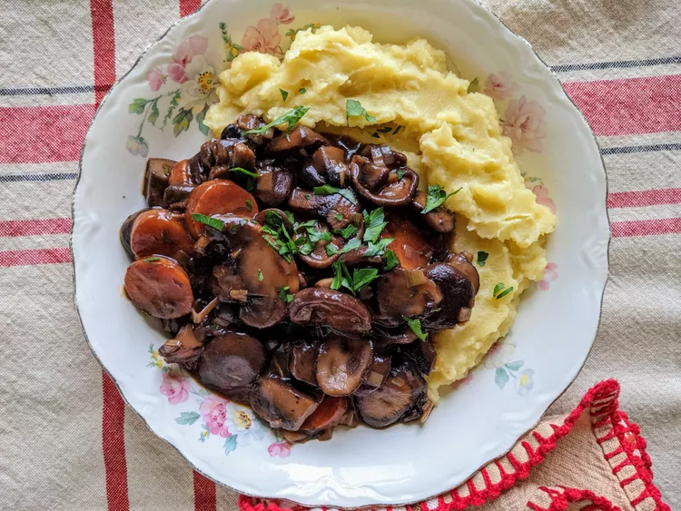

Mushroom Stew

Mushroom Stew in its final form
Mushrooms simmered with onions, wine, and carrots make for a rich, French-style stew. Serve with egg noodles, polenta, or mashed potatoes
Ingredients
- 8 ounces shiitake mushrooms, chopped
- 8 ounces oyster mushrooms, chopped
- 2 cups roughly chopped onion
- 6 tablespoons extra-virgin olive oil, divided, or to taste
- salt and freshly ground black pepper to taste
- 1large leek, white and light green parts only, diced
- 2 medium carrots, thinly sliced
- 3 cloves garlic, crushed and minced
- tablespoon tomato paste
- 2 ½ tablespoons all-purpose flour
- ½ cups dry red wine
- ½ cups vegetable broth
- tablespoon tamari, or to taste
- ¼ teaspoon cayenne pepper, or to taste
- sprigs fresh thyme, chopped
- 2 bay leaves, or more to taste
Steps
- Combine all four mushroom types in a large bowl with onions; toss gently to mix.
- Heat 2 tablespoons oil in a very large pot over medium-high heat. Cover the bottom of the pot with one layer of the mushroom-onion mixture. Cook, without moving them around too much, until they begin to brown and caramelize on one side, 3 to 5 minutes. Stir and cook another 3 to 5 minutes to brown the other side. Transfer to a large bowl using a slotted spoon. Add 2 tablespoons oil to the pot, and repeat with another batch. Continue until all mushrooms and onions are cooked.
- Season mushroom-onion mixture with salt and pepper.
- Add wine, vegetable broth, tamari, cayenne, thyme, and bay leaves, and scrape up the brown bits at the bottom of the pot with a wooden spoon. Carefully add the mushroom-onion mixture. Bring to a simmer.
- Reduce heat to low and simmer, partly covered, until carrots and onions are tender and sauce has thickened, 30 to 40 minutes.